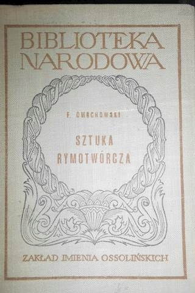
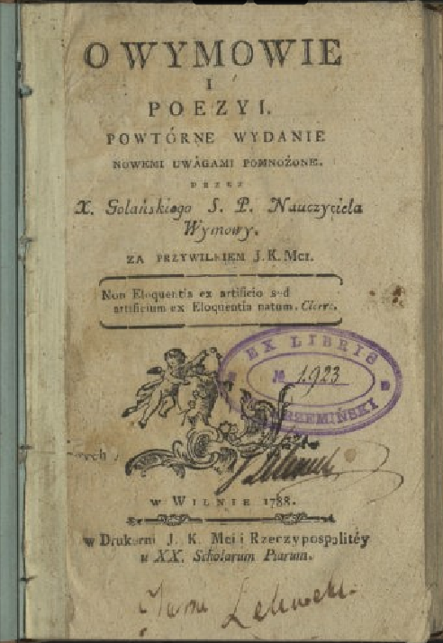
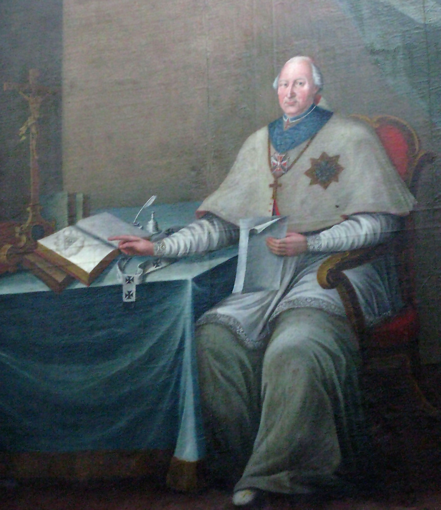
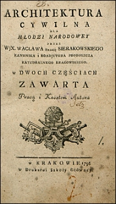
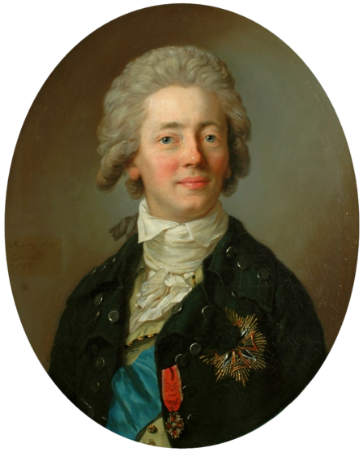
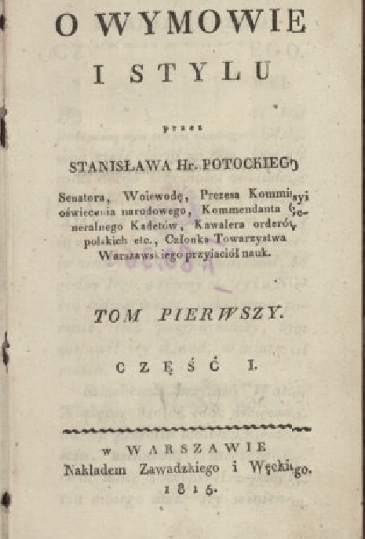
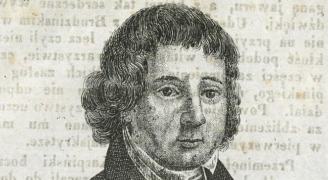

Najczęściej przeciwstawia się naturę wobec sztuki (Dmochowski Sztuka rymotwórcza),
traktowało się je kontrastowo, jakby współzawodniczyły ze sobą,
albo uważano, że sztuka przewyższała naturę (Golański O wymowie i poezji;
W. Sierakowski Architektura cywilna,
S.K. Potocki O wymowie i stylu).
Franciszek Ksawery Dmochowski

Sztuka rymotwórcza

O wymowie i poezji
Wacaław Sierakowski
Architektura cywilna

Stanisław Kostka Potocki
O wymowie i stylu

Zgoła inne podejście miał Karpiński, który uważał, że naśladowanie natury w sztuce jest zaledwie zbliżaniem się do „pięknej z siebie natury”.
Franciszek Karpiński

Natura jako źródło i przedmiot sztuki jest rozważana – tak jak sama sztuka – w dwóch kategoriach estetycznych: piękna i wzniosłości.
Potocki uważa, że geniusz natury wynika z jej harmonii, dostojności, proporcji. One wynikają z kategorii wdzięku, która dopuszcza pewien limit błędu i dowolności natury.

Ludwik Osiński pisał zaś:
„Widzimy, że nawet pewny rodzaj nieporządku zgodzić się może z wyobrażeniem wielkości […] Mnóstwo skał rzuconych bez ładu ręką natury większy i wspanialszy sprawia nam widok, niż gdyby je niebaczna sztuka w symetryczny ułożyła porządek..”
Uważał, że właśnie losowość przyrody i jej dzikość oraz niesymetryczność stanowią o potędze natury samej w sobie.